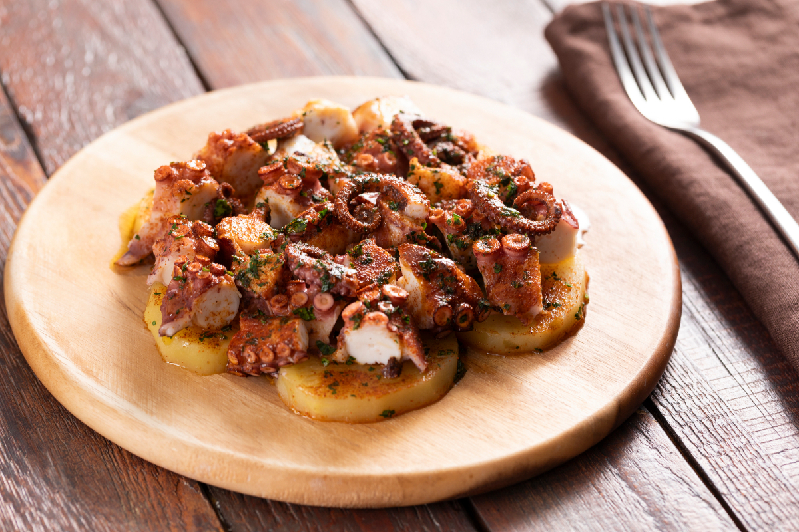
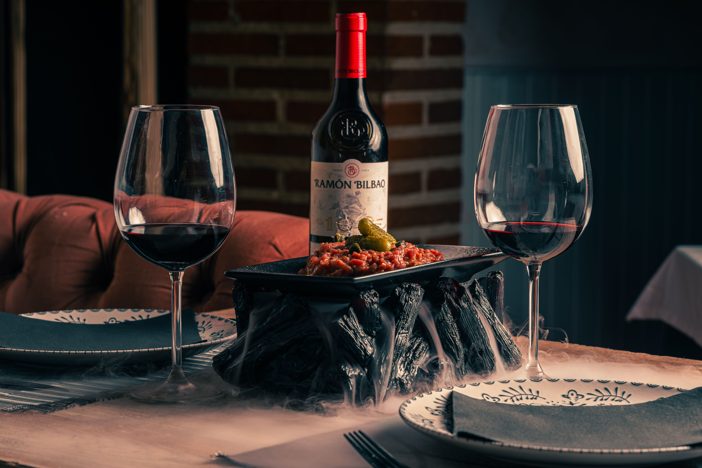
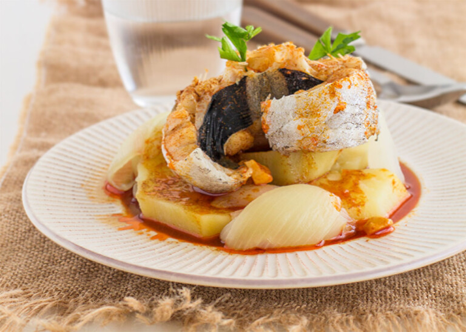
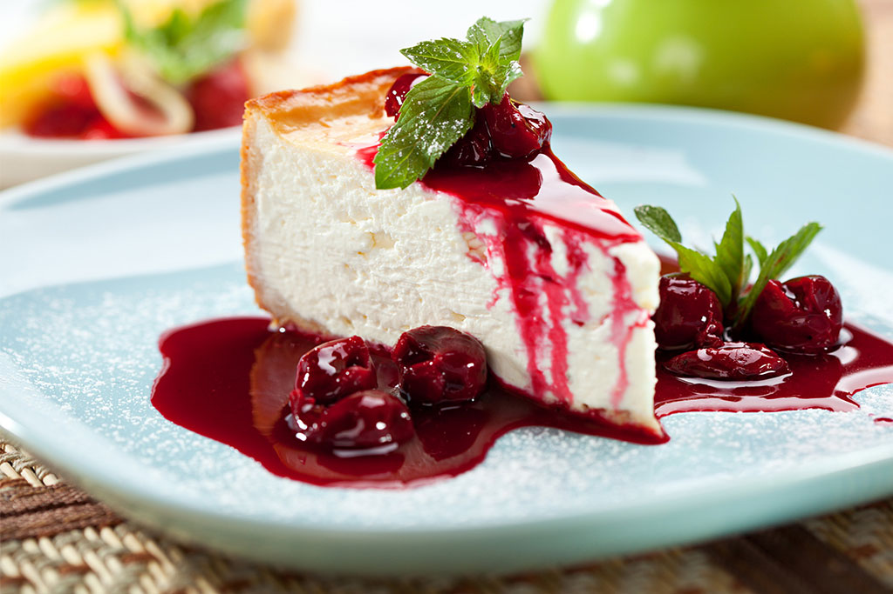
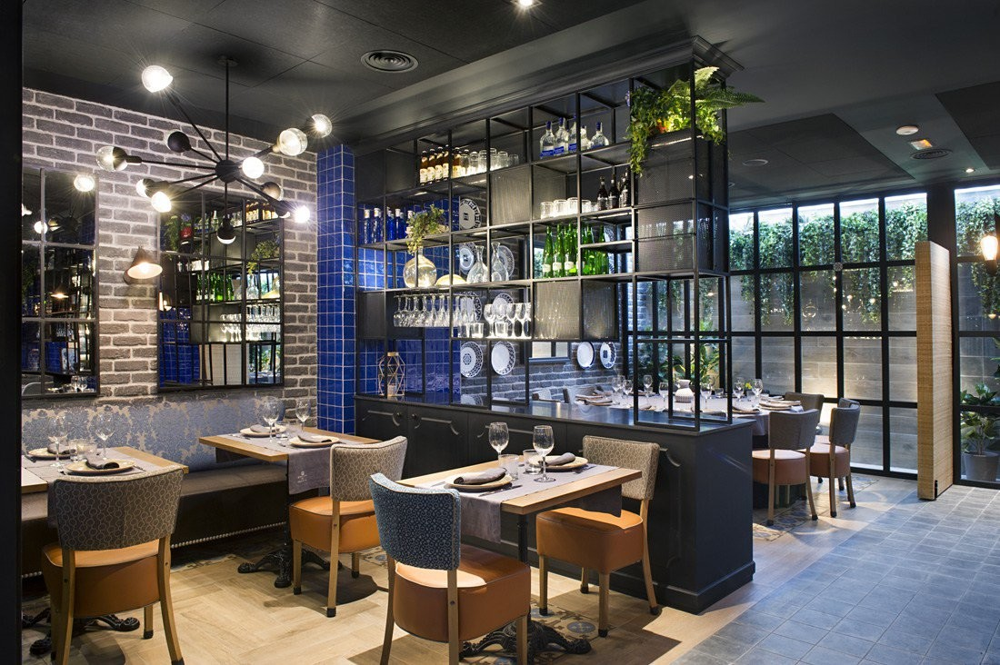
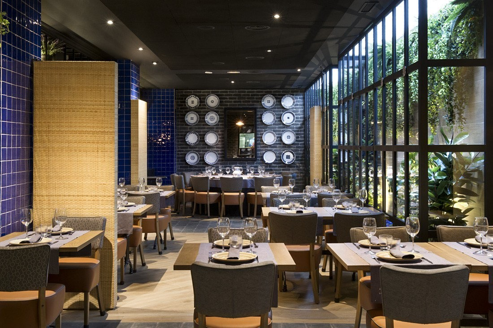
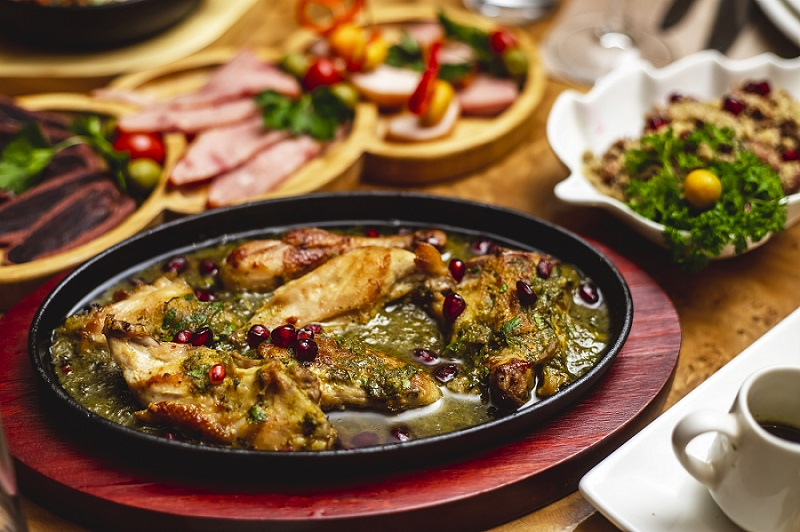

Pulpo a la gallega
Pulpo cocido, aceite de oliva, pimentón y sal.
18 €RESTAURANTE · COCINA GALLEGA
Sabores de Galicia, producto local y cocina hecha con calma.

SOBRE NOSOTROS
En A Lareira trabajamos con producto local y recetas tradicionales, buscando siempre respetar el sabor de cada ingrediente.
Un espacio pensado para disfrutar de la gastronomía gallega en un ambiente tranquilo y cercano.
DE NUESTRA COCINA

Pulpo cocido, aceite de oliva, pimentón y sal.
18 €
Pescado fresco acompañado de productos de temporada.
22 €
Cremosa, horneada lentamente y servida con frutos rojos.
7 €NUESTRA CARTA
Pulpo a la gallega
18 €Croquetas caseras
10 €Tabla de quesos gallegos
14 €Merluza del día
22 €Entrecot de vaca gallega
26 €Arroz de marisco
24 €Tarta de queso
7 €Filloas
6 €EL RESTAURANTE



VISÍTANOS
Rúa de Galicia, 24
A Coruña
Martes - Domingo
13:00 - 16:00 · 20:00 - 00:00
981 000 000
info@alareira.es
RESERVAS
Reserva tu mesa y ven a disfrutar de nuestra cocina.
Llamar para reservar